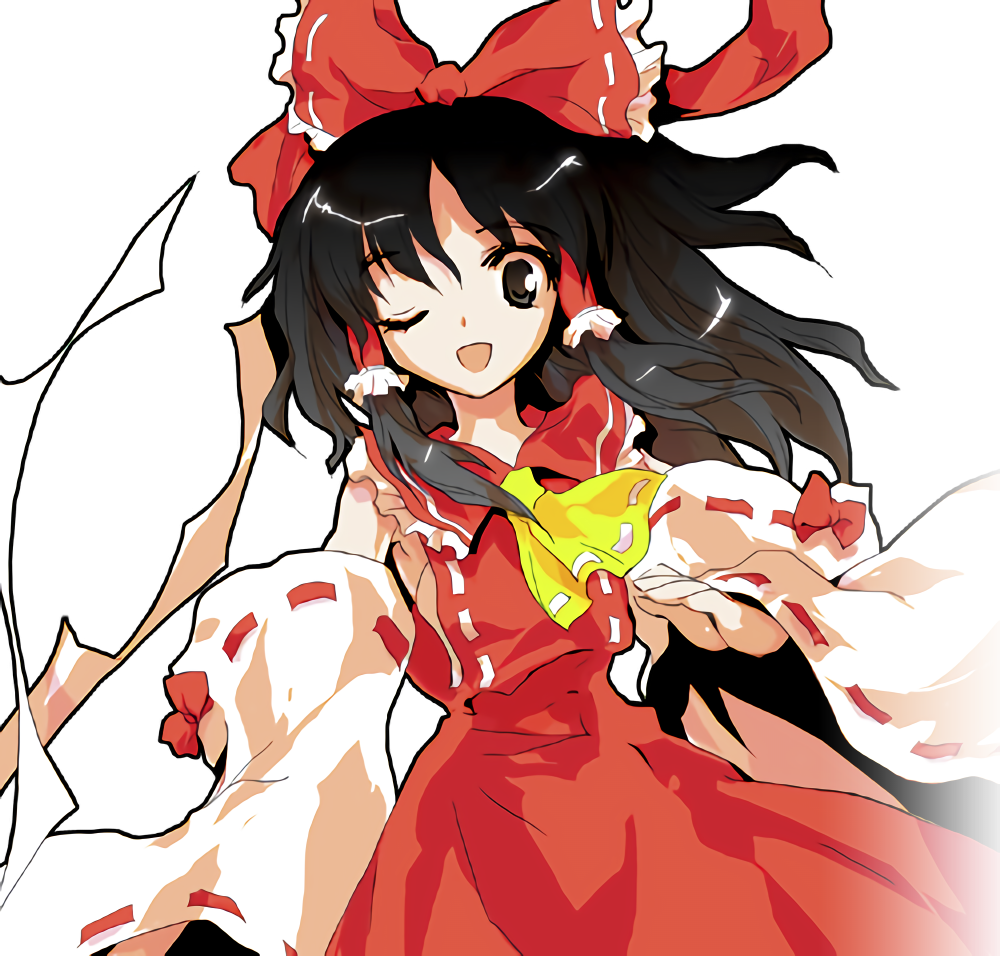
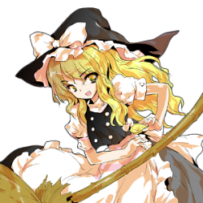
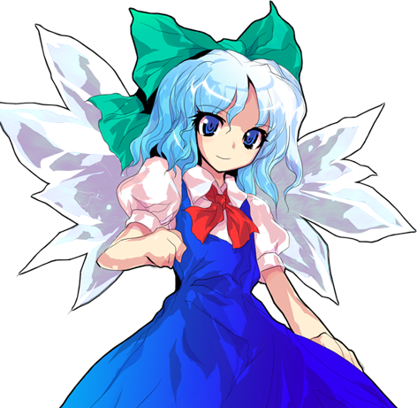
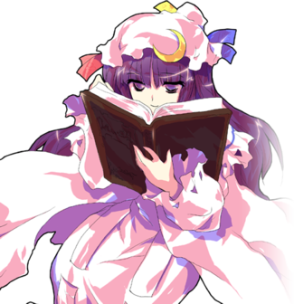
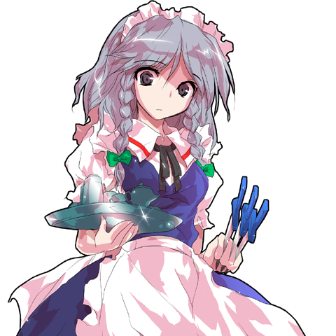

Personagens de Touhou
· Touhou é uma das franquias com maior número de personagens que existem. Se for contar todos os tipos de mídia, os personagens somam mais de 180. Então, decidi mostrar apenas os mais famosos entre os fãs e alguns dos meus favoritos pessoais.
PRÓXIMA PÁGINA»Reimu Hakurei
Reimu Hakurei é a personagem principal de Touhou Project junto com Marisa Kirisame. Como a sacerdotisa de Hakurei, ela toma conta da Barreira Hakurei de Gensokyo e extermina youkai problemáticos. Sua personalidade é sincera, otimista e um pouco curiosa. Ela fica rapidamente zangada quando é ofendida, mas também é rápida para oferecer ajuda àqueles que necessitam. Embora ela seja preguiçosa em seu tempo livre, ela é altamente dedicada às suas tarefas como a Sacerdotisa de Hakurei.
Marisa Kirisame
Marisa Kirisame é uma maga humana que se especializa em magias de luz e calor, ela atualmente reside na Floresta da Magia e tem uma mania compulsiva em coletar coisas. Ela é considerada a deuteragonista de Touhou Project junto com a protagonista, Reimu Hakurei. Marisa é bem direta e informal com todos. Ela pode ser condescendente, como se estivesse tentando caçoar dos outros, e as vezes tem dificuldades em expressar simpatia. As vezes ela é teimosa e nem um pouco cooperativa.
Cirno
Cirno é uma Fada do gelo execpcionalmente forte para sua espécie e uma chefe recorrente nos estágios de Touhou Project. Sua personalidade é infantil e ela é geralmente considerada estúpida. Cirno costuma a vagar livremente, procurando por inimigos poderosos, afim de alimentar seu ego e provar a si mesma que ela é realmente "a mais forte", como costuma se proclamar.
Patchoulli Knowledge
Patchouli Knowledge é uma maga muito esperta e asmática, que vive na Mansão do Demônio Escarlate. Ela passa a maioria de seu tempo na biblioteca da mansão, lendo e escrevendo livros de magia. Aparentemente ela é capaz de usar magias muito poderosas de todos os tipos, usando muitos elementos em um único ataque, mas devido à sua asma e condição de saúde precária, ela frequentemente não consegue usá-las.
Sakuya Izayoi
Sakuya Izayoi é a empregada chefe da Mansão do Demônio Escarlate. Ela trabalha para sua senhora, Remilia Scarlet e aparentemente é a unica humana vivendo e trabalhando na mansão. Ela tem o poder de manipular o tempo. Sakuya é conhecida por "parar" facas no "meio do ar" e prosseguir o tempo, para que as facas voem ate seu alvo.
PRÓXIMA PÁGINA»
All rights belong to Team Shanghai Alice ©